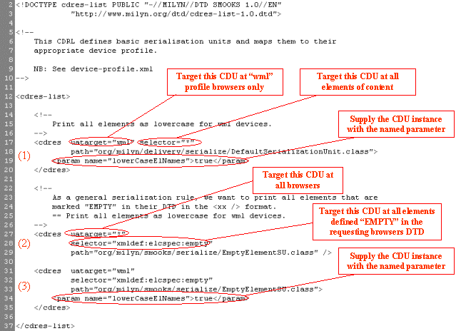
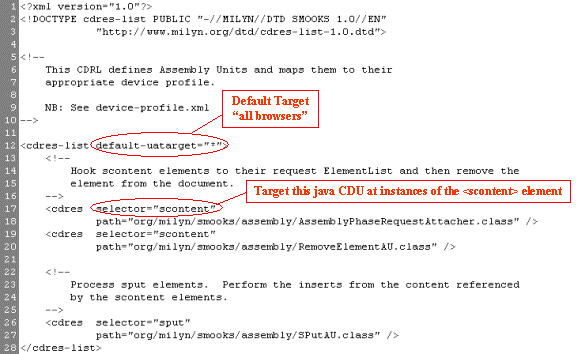

Content Delivery Units
Smooks manipulates/transforms content for the requesting browser by applying
Content Delivery Units. At present there are 4 types of Content Delivery Unit
for manipulation of HTML markup:
- HtmlServletResponseWrapper: This Content Delivery Unit "hooks" the
SmooksHtml class into the transformation process. SmooksHtml
transforms HTML for the requesting browser by applying the following Content Delivery Units.
- Assembly Units: Applied during the Assembly Phase.
- Transformation Units: Applied during the Transformation Phase.
- Serialization Units: Applied during the Serialisation Phase.
In a Servlet Container, other forms of content (e.g. images, .css etc) can be transformed for the requesting browser
by applying other implementations of the
ServletResponseWrapper abstract class.
Content Delivery Units are what Smooks is all about! Smooks is extended by developing and deploying
Content Delivery Units.
Content Delivery Units are targeted at specific elements of content through a special
configuration file called a "Content Delivery Resource List File" (.cdrl). The DTD for this file can be seen
at http://www.milyn.org/dtd/cdres-list-1.0.dtd
Content Delivery Resources
You will also encounter the term "Content Delivery Resource". What is the difference between
"Content Delivery Resource" and "Content Delivery Unit?"
- Content Delivery Resource: Any resource used by Smooks to deliver
content to the requesting browser. These resources are targeted at browsers
using the .cdrl files (as above).
- Content Delivery Unit: An executable Content Delivery Resource. See
ContentDeliveryUnit and it's sub-interfaces
(AssemblyUnit etc).
Examples of non-executable Content Delivery Resource would be "dtd" and "doctype" resources. See
dtds.cdrl and doctype.cdrl from the
CNN.com sample. Non-executable Content Delivery Resources
can be loaded (e.g. by a Content Delivery Unit) through calls to
ContentDeliveryConfig.html.getCDRDefs().
Archive Definition File Structure
See the CDRDef class Javadoc.
Content Delivery Unit Selection
See the CDRDef class Javadoc.
.cdrar Files
.cdrar files are a Jar format file used to bundle Content Delivery Units/Resources and .cdrl files (optional).
While Content Delivery Resources can be loaded in the standard way from the classpath, it is thought that
this may be a cleaner way to deliver resources in a production environment.
The following illustration shows the internal structure of a sample .cdrar file.

Sample Configurations
The following are sample .cdrl files from the CNN.com sample.
Sample 1 - serialise-basic.cdrl
This .cdrl file targets some Serialization Units.

From this image you can see there are 3 CDRDef.html">CDRDefs defined in this archive.
It might occur to you that all 3 definitions are applicable to EMPTY elements on "wml" profile browsers.
To see how the correct Serialisation Unit is selected, see the section on
Content Delivery Unit Selection.
Sample 2 - assembly.cdrl
It targets a number of Assembly Units at some custom sample tags created to pull/scrape
content from the CNN.com homepage source.
